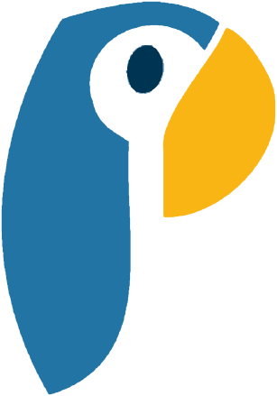
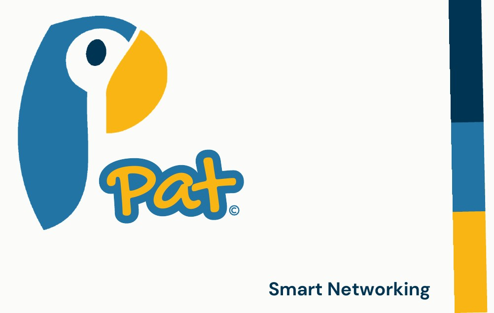
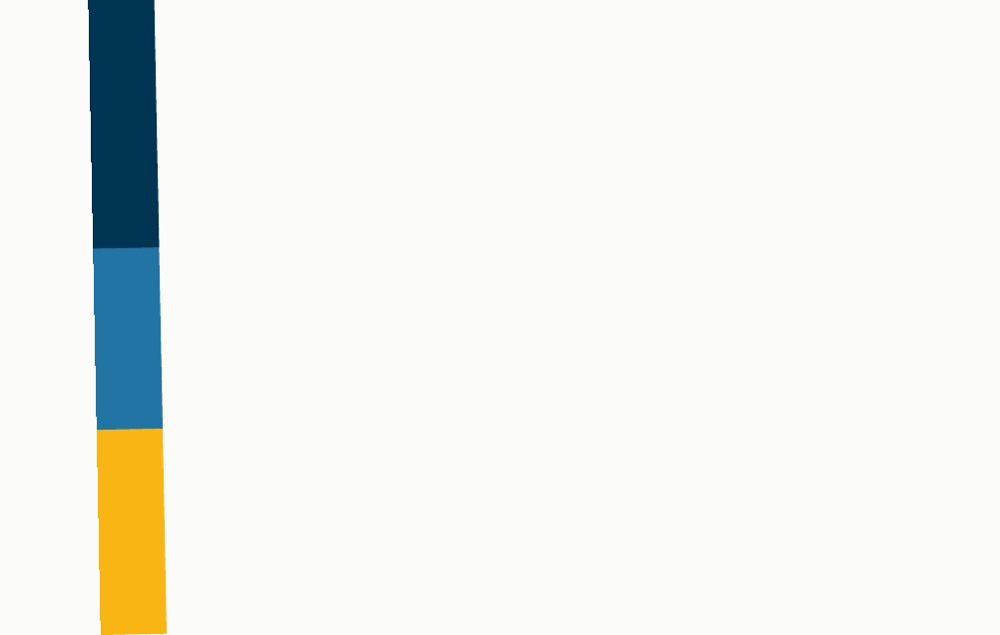

Why I made it
“People don't network in person much these days. Pat is about bringing physical networking back.”
Most networking happens online now. That has real upsides, but it misses the moment of actually meeting someone: the handshake, the conversation, remembering where you met. Business cards used to cover that, but they end up in a drawer, and a number typed into your phone gets lost among friends and family.
Pat merges the two worlds. You meet in person, tap, and the connection lives on your phone, ready to use. The physical moment comes first, and the digital side keeps hold of it.
How it works
Tap your Pat card on someone's phone. An NFC chip does the rest.
Your connection page opens: website, phone number and socials in one place. If they have the Pat app it opens there; if not, in the browser.
It's saved in Pat's own library on your phone, kept apart from your personal contacts.
Every detail people need, always up to date, handed over with a tap instead of a bit of card.
Keep your plumber, electrician and decorator in one place, not lost in your phone's contacts. Down the line, Pat would let you search for people by trade.
The name
Pat is tap, backwards. Both words mean the same gesture: you tap, or pat, your card on someone's phone to make the connection. The name is the action, whichever way round you read it.
A parrot that's also a P

Body = stem Face = counter Beak = bowl- Drawn by handThe logo started as my own drawing of a parrot, then became a few flat shapes in four colours.
- The body is the stemThe long blue body forms the upright of the P.
- The face is the counterThe white face, with its one navy eye, is the hole in the letter.
- The beak is the bowlThe yellow beak closes the curve.
- A happy accidentIt only clicked later that parrots repeat what they hear, which is exactly what Pat does with your details.


Brand guidelines
A short brand book pulls it together: the idea, the name, the parrot P, the logo versions, clear space, colour, type and the card.